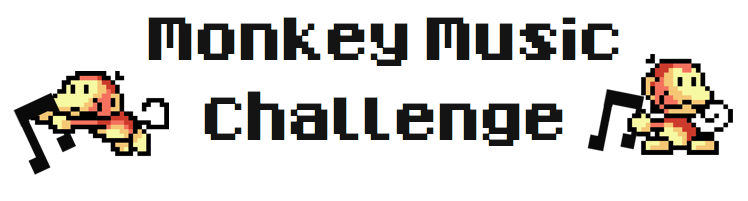

The Spotify backend is consists of a multitude of individual services. One such service is the music recommendation service, which is responsible for finding and recommending new tracks to Spotify users, according to their music taste.
The music recommendation service has lately been getting some pretty negative feedback from users. The word out on Twitter is that even monkeys could find better music recommendations!
Therefore, upper management has made an informed decision that the next version of the music recommendation service shall be operated entirely by monkeys. As product manager for the music recommendation service, your job is to make sure that the monkeys do a good job.
You have therefore decided to write a computer program that helps monkeys find good track recommendations for Spotify users.
This is all entirely fictional of course.
The task consists of implementing a program to play the Monkey Music game. The goal of the game is to score points by gathering track recommendations and giving them to a Spotify user.
Every game of Monkey Music is broken up into a number of turns.
Every turn, your program will be executed and fed information about the current
state of the level by reading from stdin. Your program responds by printing
one command to stdout. The command decides what your monkey does during the c
urrent turn.
Fate decides the order in which monkeys execute their commands in a turn.
Before every turn, execution of your program starts. After every turn, executio n of your program stops.
Your monkey will pick up tracks and deliver them to a user.
When a track is delivered, you will recieve a score according to how well the t rack fits the music taste of the user. The player with the highest score at th e end of the game will be the winner.
You should try to get as high a score as possible. {. tip}
Every game is played for a limited amount of turns. This limit is different for different levels.
The game ends when the turn limit is reached.
Every time your program is executed, the execution time will be measured. Every level has a total time limit, that your program should not exceed.
If your execution time reaches the time limit, your monkey will run out of ener
gy and fall asleep for 5 turns. Afte sleeping for 5 turns, the remaining ex
ecution time of your program will be replenished.
The number of tracks your monkey can pick up and hold at any given time is call ed carrying capacity.
The carrying capacity of your monkey is different for every level.
The game consists of two different phases.
The first phase is the initialization phase, it occurs once every game.
During the initialization phase, your program will be given information about the level that will be useful during the entire course of the game.
The information that can be read from stdin during the init phase is:
"INIT"width of the mapheight of the mapturn limit of the gametoplists of the userAfter the initialization phase, execution of your program will stop until the next phase.
Make sure to keep the data from the initialization phase in a persistent cache!
After the initialization phase, a number of turn phases will follow.
The total number of turn phases is decided by the turn limit of the level.
The information that can be read from stdin during a turn phase is:
"TURN"After reading the turn information from stdin, your program will print a comm
and for your monkey to stdout.
The level is a n x m grid of cells. It is sent to the standard input of your
program.
Each cell contains one of the following things:
M[id]You, and your competitors each have your own monkey to control. Every monkey is identified by a unique numerical id.
#Walls are inanimate objects that monkeys cannot pass through.
[URI]Tracks are identified by their unique Spotify URI. Every track URI starts with spotify:track:,
followed by 22 alphanumerical characters. Example: spotify:track:5H85hOp2oMlhMh9JlkdJP2.
Tracks can be picked up and carried around by monkeys.
UThe user is where monkeys deliver their track recommendations. Monkeys are scored for every track delivered to the user according to how well the track fits the user’s music taste.
[SPACE]Nothing to do here.
A cell can only contain one thing at any time.
How well track matches the music taste of a user is decided by the user’s toplists.
Every Spotify user has a track toplist, an album toplist and an artist toplist. Every entry in a toplist is a comma-separated string of metadata.
The toplists are sent to the standard input of your program on the following formats:
First an integer n, followed by n lines of track metadata entries.
n
track,album,artist,year
track,album,artist,year
...
First an integer n, followed by n lines of album metadata entries.
n
album,artist,year
album,artist,year
...
First an integer n, followed by n lines of artist metadata entries.
n
artist
artist
...
You will also receive a list of artists that the user does not like.
First an integer n, followed by n lines of artist entries.
n
artist
artist
...
Spotify does not actually keep toplists of disliked artists.
Each track is scored according to the user toplists by placing it into 1 out of 5 score tiers.
There are three positive tiers: 1, 2 and 3. There are two negative tiers,
-1 and -2
The following criteria decide which tier a track belongs to:
To recommend a track whose artist is among the user’s disliked artist toplist
is simply an epic fail.
When the track is already in the user’s track toplist, there is not much
point in recommending it, is there?
If the artist of the track is in the user’s artist toplist, the track
will be bumped up one tier.
If the album of the track is in the user’s album toplist, the track
will be bumped up one tier.
This is an interesting one. Every user has a top decade, which is the decade that is most prominent in the user’s track toplist and album toplist.
If the year of the track belongs to the user’s top decade, the track
will be bumped up one tier.
Your track will be scored according to it’s tier:
Tier 3 tracks are obviously very valuable, so be on the lookout for these.
Commands are sent from the standard output of your program. In each turn of the game, every monkey executes one command.
Commands which the monkeys can execute are:
WMoves the monkey one cell to the left.
EMoves the monkey one cell to the right.
NMoves the monkey one cell up.
SMoves the monkey one cell down.
[URI]Queries the metadata for a track URI. You will recieve the metadata the following turn.
B,[COMMAND],[COMMAND],[COMMAND]Once every game, the monkey can issue a boost command and then issue three other comma separated commands during the same turn.
Your monkey must every turn choose between moving and looking up the metadata of a track!
When standing next to a track and executing a move command toward the track, your monkey will remain in the same cell and pick up the track. If the carrying capacity of your monkey is maxed out, nothing will happen.
Once a track is picked up, there is no way to get rid of it but to deliver it.
When standing next to the user and issuing a move command toward the track, your monkey will remain in the same cell and deliver all currently carried tracks to the user. You will then recieve score according to the score system.
Be careful about picking up negative tier tracks. You’ll have to deliver them.
INIT
M[id]
[WIDTH]
[HEIGHT]
[TURN LIMIT]
[n]
[TRACK],[ALBUM],[ARTIST],[YEAR]
[n]
[ALBUM],[ARTIST],[YEAR]
[n]
[ARTIST]
TURN
M[ID]
[TURN NUMBER]
[REMAINING CAPACITY]
[REMAINING TIME]
[n]
[URI],[TRACK],[ALBUM],[ARTIST],[YEAR]
[LEVEL]
[DIRECTION]|[URI]|B,[COMMAND],[COMMAND],[COMMAND]
The following command will result in your monkey moving one step to the east during the turn:
`W`
The following command will result in a track metadata query:
`spotify:track:5H85hOp2oMlhMh9JlkdJP2`
Your monkey will not move during the turn.
The next turn, the requested track metadata can be read from the turn input.
The following command:
`B,W,spotify:track:5H85hOp2oMlhMh9JlkdJP2,E`
will result in the monkey moving one step west, one step to the east, and looking up the metadata of one track during one turn.
The turn input after having issued this command:
`B,W,spotify:track:5H85hOp2oMlhMh9JlkdJP2,spotify:track:5H85hOp2oMlhMh9JlkdJP2`
could look like:
TURN
10
M2
1
4529
2
spotify:track:5H85hOp2oMlhMh9JlkdJP2,TODO,TODO,TODO,TODO
spotify:track:5H85hOp2oMlhMh9JlkdJP2,TODO,TODO,TODO,TODO
Monkey Music depends on Ruby 1.9.
If your OS does not provide it by default, you can always get it using RVM.
To install the challenge runtime:
> gem install monkeymusic
To get started quickly:
> monkeymusic demo
To see something on the screen:
> monkeymusic -p demo_player
You can probably learn a lot about the game from reading the demo_player.
Your competition entry is to be handed in as a zip archive containing everything needed to run your program.
When unpacked, your program should be runned through an executable file
called runme. This file should be put into a subfolder.